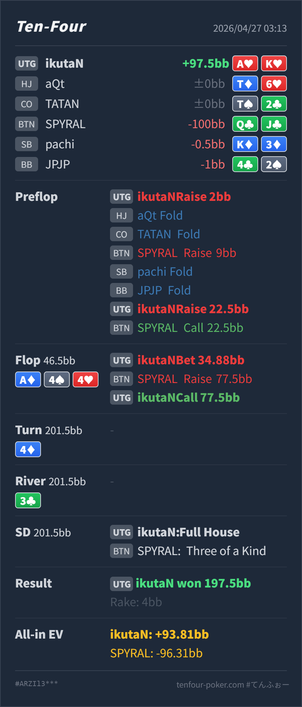

Preflop open
良いA♥K♥ は UTG open の最上位付近です。
主論点は、UTG A♥K♥ で BTN の 3bet に 22.5BB 4bet したあと、flop A♦ 4♠ 4♥ で pot 46.5BB に対して 34.88BB を打ち、BTN shove に call した判断です。結論は、preflop の 4bet と flop shove への call はかなり自然です。見直すなら call ではなく、flop の c-bet size です。4bet pot の A-high paired board は Hero 側のレンジ優位が強いので、大きく打って相手の弱い hand を降ろすより、小さめに打って相手の underpair や広い float を残す設計が本線になります。
A♥K♥A♦ 4♠ 4♥ / 4♦ / 3♣A♥K♥ の UTG open、BTN 3bet への 4bet、flop shove への call は良いです。大きなズレは flop 34.88BB の大きめ c-bet で、標準はもっと小さく打つか、一部 check を混ぜる形です。AA/KK/AK を厚く持ち、flop A♦ 4♠ 4♥ では BTN 側よりかなり uncapped です。Hero の AK はこの board で非常に強い value hand です。46.5BB に 34.88BB を打つと、BTN の QQ/JJ/TT/KQ のような負けている hand を降ろしやすく、続行される範囲は Ax、slowplay、まれな 4x、強い bluff に寄ります。Ax や広い bluff が残るなら call は自然です。ここを降りると、flop の大きい bet 自体がかなり使いにくくなります。A♥K♥2BB, HJ fold, CO fold, BTN raise 9BB, SB fold, BB fold, UTG raise 22.5BB, BTN callA♦ 4♠ 4♥ / 4♦ / 3♣34.88BB, BTN raise 77.5BB, UTG call
良いA♥K♥ は UTG open の最上位付近です。
良いAKs は AA/KK を block しつつ、call だけに回すには強すぎる clear 4bet hand です。
A♦ 4♠ 4♥良いが size は大きいA♥K♥ は top pair top kicker で、value の中心です。ただし相手の弱い underpair や broadway を残したい hand でもあります。
良いAK はこの SPR では降りすぎてはいけない上位 hand です。
4♦
Hero は board の trips に AA を組み合わせた full house です。
3♣
Hero は full house のまま勝っています。
| 論点 | その場で起きがちな見え方 | どこがズレやすいか | 次回の基準 |
|---|---|---|---|
| 4bet pot の A-high paired board | AK で top pair top kicker なので、大きく打ってすぐ入れ切りたくなる | Hero 側のレンジが強すぎる board では、大きく打つほど相手の弱い hand を逃がしやすいです。AK は守る hand ではなく、相手の負けている range を残して value を取る hand です。 | 4bet pot で Axx paired のようにレンジ優位が大きいときは、まず小さめ c-bet を本線に置く |
| shove された後の判断 | 大きく raise されると 4x/AA が怖くなり、call が薄く見える | その怖さ自体は自然ですが、BTN の 3bet call range に 4x は多くありません。さらに SPR が低いので、flop で大きく打った AK を降ろしすぎると、相手の bluff shove を許しすぎます。 | 大きく c-bet した強い Ax は、低SPRでは基本的に bet/call までをセットで考える |
| ストリート | その時点の見え方 | 実ハンドの位置づけ | 評価 | その場の一手 |
|---|---|---|---|---|
| Preflop open | UTG からは狭く強い range で入り、後ろ全員に対して主導権を取りにいきます。 | A♥K♥ は UTG open の最上位付近です。 | 良い | 2BB open は問題ありません。 |
| Preflop vs 3bet | BTN 3bet 9BB は position ありで、value と一部 blocker bluff を含みます。UTG 側は早い位置なので強く返せます。 | AKs は AA/KK を block しつつ、call だけに回すには強すぎる clear 4bet hand です。 | 良い | 22.5BB 4bet は自然です。BTN call 後は SPR が低く、postflop はかなり打ち切りに近い構造になります。 |
Flop A♦ 4♠ 4♥ | UTG 4bet 側に AA/AK/AQ と overpair が多く、BTN 側の 4x はかなり限定的です。Hero 側がレンジ優位を持つ board です。 | A♥K♥ は top pair top kicker で、value の中心です。ただし相手の弱い underpair や broadway を残したい hand でもあります。 | 良いが size は大きい | 小さめ c-bet を本線にしたいです。大きく打つなら、shove されても基本 call する計画まで持ちます。 |
| Flop vs raise | BTN shove は、強い Ax、slowplay、まれな 4x、または広すぎる bluff が候補です。4bet pot なので相手の value は強く見えますが、4x の自然な組み合わせは多くありません。 | AK はこの SPR では降りすぎてはいけない上位 hand です。 | 良い | call は自然です。flop の大きい bet を選んだ以上、この hand は bet/fold にはしません。 |
Turn 4♦ | flop all-in 後なので判断はありません。 | Hero は board の trips に AA を組み合わせた full house です。 | ||
River 3♣ | flop all-in 後なので判断はありません。 | Hero は full house のまま勝っています。 |
A-high paired board は、Hero 側のレンジ優位が大きいので、強い hand ほど相手の弱い range を残す size を先に考えます。AK で top pair top kicker を作った低SPR spot は、flop shove に対して基本的に降りません。迷うべき点は call ではなく、flop でどの size から入るかです。bet/call へ寄ります。bet/fold したい hand と、入れ切れる hand を事前に分けておくと安定します。Q♣J♣ で 3bet call し、flop shove まで進んでいます。この相手レンジが本当に広いなら、Hero の大きい c-bet / call はかなり利益的です。